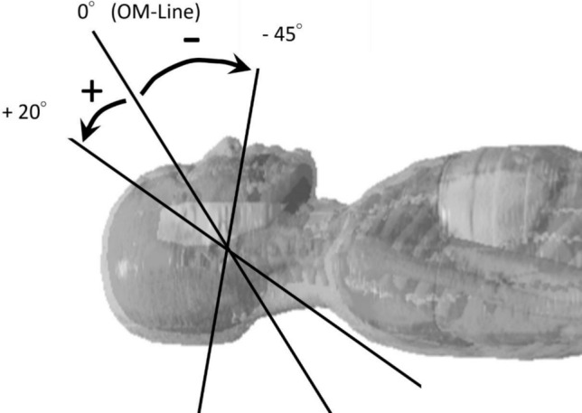
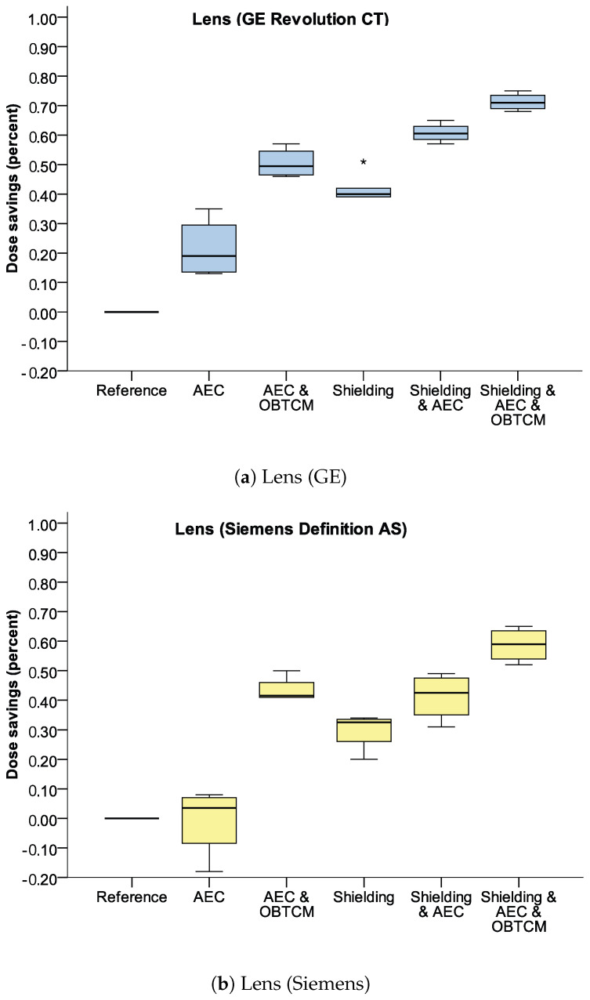

9420 — Bảo vệ thủy tinh thể & tuyến giáp trong CT sọ–cổ ở trẻ: nghiêng gantry, OBTCM, che chắn
Tags: protocol:CT-so-co-nhi protocol:gantry-tilt protocol:OBTCM protocol:che-chan-bismuth vung:dau-co vung:mat anatomy:thuy-tinh-the
Mức chắc chắn (certainty): tổng hợp y văn (literature synthesis) — số liệu từ phantom, mô phỏng Monte Carlo và nghiên cứu liều lâm sàng; không có RCT về kết cục ung thư/đục thủy tinh thể.
1. Tổng quan — vì sao thủy tinh thể và tuyến giáp là "cơ quan nguy cơ" chứ không phải "bệnh"
Đây là bài vật lý–protocol, không phải bài chẩn đoán bệnh. "Tổn thương" ở đây là liều hấp thụ (mGy) và nguy cơ tích lũy; "mẫu hình" là phân bố liều theo hình học chùm tia.
TẠI SAO thủy tinh thể nhạy nhất:
- Vị trí hình học: ở CT sọ, thủy tinh thể nằm ngay trong trường chiếu hoặc sát mép trường; chỉ cần vài milimét chùm tia chạm vào là liều tăng vọt. Mô phỏng Monte Carlo với chùm 2 mm cho thấy đường phân bố liều có đỉnh nhọn rồi đuôi giảm chậm — nghĩa là "cắt" được mắt ra khỏi trường thì liều rơi hàng chục lần, còn "chạm" một chút vẫn ăn liều đáng kể (PMC12950018).
- Sinh học: sợi crystallin trong thủy tinh thể không có mạch máu, không tái tạo; tổn thương protein → đục thủy tinh thể (cataract), chủ yếu thể dưới bao sau. Trẻ có nhiều tế bào phân chia và tuổi thọ còn dài để biểu hiện muộn.
- Ngưỡng: ICRP xếp đục thủy tinh thể là hiệu ứng có ngưỡng, khoảng 0,5 Gy cho thể phát hiện được khi phơi nhiễm cấp; bằng chứng dịch tễ gần đây ghi nhận nguy cơ tăng ở mức < 100 mGy (đoàn hệ nhân viên Fukushima, PMC13188973) — nên không có "ngưỡng an toàn" để chủ quan.
TẠI SAO tuyến giáp đứng thứ hai:
- Tuyến giáp nằm sát trường chiếu sọ–cổ; CT sọ ở người lớn cho liều tuyến giáp trung bình 2,66 ± 1,03 mGy, liều hiệu dụng 1,6 ± 0,4 mSv (PMC11177018). Với trẻ, cùng kV/mAs nhưng kích thước nhỏ hơn → liều/đơn vị mô cao hơn.
- Nang giáp tập trung iod, mô tuyến phân chia nhanh ở trẻ → nhạy với bức xạ; đây là lý do ung thư tuyến giáp là ung thư thứ phát được theo dõi sau xạ trị vùng cổ ở trẻ.
- Vấn đề thực hành: trường chiếu bị kéo dài quá mức. Trong 1.306 ca CT ngực, tuyến giáp nằm trong trường 99,8% và toàn bộ tuyến bị chiếu ở 76,9% (PMC10358389) — tức là "lỗi protocol" phổ biến hơn ta tưởng.
Hai câu hỏi của mọi protocol CT sọ–cổ ở trẻ:
- Có cắt được mắt ra khỏi trường chiếu không? (nghiêng gantry, giới hạn scan range)
- Nếu không cắt được, giảm liều bằng cách nào mà không mất chất lượng chẩn đoán? (OBTCM, kV, mAs, che chắn có kiểm soát)

2. "Gamut" kỹ thuật giảm liều theo hình học
Xếp theo hiệu quả/độ phức tạp, không theo hãng máy:
- Nhóm A — thay đổi hình học (hiệu quả nhất):
- Nghiêng gantry (gantry tilt): nghiêng +5° trở lên so với đường ổ mắt–lỗ tai giảm liều thủy tinh thể tới 87%; nghiêng xuống −35° cũng giảm mạnh vì chùm tia đi qua mô hấp thụ cao (PMC12950018).
- Giới hạn scan range: bắt đầu từ nền sọ, không lấy thêm hốc mắt/cổ. Chỉ cần đưa/không đưa nhãn cầu vào trường, liều hiệu dụng của tuyến nước bọt–giáp–niêm mạc miệng lệch tới 1,5 lần (PMC12950018).
- Nhóm B — điều biến dòng ống theo cơ quan (OBTCM):
- Giảm dòng ở cung trước (nơi có mắt) và bù ở cung sau: liều thủy tinh thể giảm tới 13% ở phantom nhi, nhưng nhiễu ảnh tăng có ý nghĩa (PMC7476969).
- Thế hệ mới dùng topogram + AI để dựng mô hình nhãn cầu 3D và cá thể hóa cung chiếu: giảm ~30% liều thủy tinh thể mà không mất chất lượng (PMC13291186).
- Nhóm C — che chắn tiếp xúc (bismuth/barium):
- Trên phantom đầu nhi: bismuth giảm 41,5% (GE) và 29,75% (Siemens); +AEC → 60,75% / 41,25%; +AEC+OBTCM → 71,25% / 58,75% (PMC10779489).
- Cái giá: nhiễu vùng hốc mắt tăng; đặt foam đệm 1–2 cm giữa da và tấm chắn giảm artifact (PMC10779489).
- Nhóm D — thông số chung: giảm kVp (120→90), giảm mAs toàn cục (GLTC), tăng pitch, lặp ảnh (IR). Tất cả đều tăng nhiễu; nghiêng gantry vẫn là biện pháp hiệu quả nhất trong so sánh 5 kỹ thuật (PMC10445673).
Bối cảnh 2021–2026: đồng thuận châu Âu (EFOMP/ESR/ESPR) không khuyến cáo che chắn tiếp xúc thường quy, vì lợi ích nhỏ và có thể làm tăng liều do AEC tăng dòng để bù suy giảm (PMC8695402). Báo cáo 2026 nhấn mạnh bằng chứng cho CT còn yếu, cần cá thể hóa thay vì cấm/cho tuyệt đối (PMC12963150).

3. Ma trận đối chiếu 5 kỹ thuật
| Kỹ thuật | Giảm liều thủy tinh thể | Chốt vào (dùng khi) | Chốt loại (không dùng khi) | Cạm bẫy |
|---|---|---|---|---|
| Nghiêng gantry ≥ +5° | Tới 87% (PMC12950018) | Máy cho nghiêng, trẻ hợp tác, cần khảo sát sọ | Chấn thương sọ–mặt cần đánh giá trọn hốc mắt; máy không nghiêng được | Nghiêng mà mắt vẫn trong trường → lợi ích gần 0: 84,8% ca có nghiêng nhưng chỉ 1,8% thật sự loại được mắt (PMC10077499) |
| Giới hạn scan range | Lớn (1,5× liều hiệu dụng nếu lấy cả mắt) | Luôn luôn, mọi ca | Không có — trừ khi chỉ định bắt buộc lấy hốc mắt | Cắt quá tay bỏ sót nền sọ/dịch não tủy; cần topogram đánh dấu |
| OBTCM | 13% (phantom nhi), ~30% với AI (PMC7476969, PMC13291186) | Máy có OBTCM; lặp lại nhiều lần | Cần chất lượng ảnh hố sau tối đa (nhiễu tăng) | Nhiễu tăng ở hố sau; không thay thế được việc cắt mắt khỏi trường |
| Bismuth/barium | 30–42% đơn thuần; 59–71% khi +AEC+OBTCM (PMC10779489) | Không nghiêng được, không có OBTCM, ca đặc biệt | Máy đang dùng AEC mạnh (nguy cơ tăng liều bù); cần ảnh hốc mắt chi tiết | Nhiễu + artifact; phải có foam đệm; đặt sai làm mất tác dụng |
| Giảm kVp / GLTC | Trung bình (tăng nhiễu) | Máy không nghiêng, không OBTCM (PMC10445673) | Trẻ nhỏ cần tương phản mô mềm cao; khảo sát mạch | Tăng nhiễu làm giảm điểm chất lượng chủ quan, dễ chụp lại → tăng liều ròng |
Cột "Chốt loại" quan trọng ngang "Chốt vào": mọi kỹ thuật đều đánh đổi bằng nhiễu/artifact, và chụp lại vì ảnh kém xóa sạch lợi ích liều.
4. Protocol & ngưỡng thực hành
Checklist trước khi quét (in dán cạnh máy):
- Xác định chỉ định: sọ đơn thuần? sọ–mặt? cổ? — nếu chỉ sọ, không lấy cổ.
- Đặt topogram với đầu ở tư thế trung tính, đánh dấu đường OM.
- Nghiêng gantry sao cho mắt nằm ngoài lát cắt đầu tiên; kiểm tra trên ảnh scout/lát đầu chứ không tin vào con số nghiêng.
- Scan range: từ nền sọ đến đỉnh sọ; không lấy thêm hốc mắt, không lấy C1–C2 nếu không cần.
- OBTCM: bật nếu có; chấp nhận nhiễu tăng nhẹ.
- Che chắn: chỉ khi không nghiêng được + không có OBTCM; dùng tấm bismuth có foam đệm, đặt trước khi scout để AEC tính đúng.
- KV/mAs: chọn preset theo cân nặng/tuổi (không dùng preset người lớn), ưu tiên IR.
- Ghi DLP/CTDIvol vào phiếu; tính SSDE (bài 937) — không dùng CTDIvol trần để so sánh giữa các máy.
Ngưỡng/điểm cần nhớ:
| Thông số | Ngưỡng | Ý nghĩa |
|---|---|---|
| Liều thủy tinh thể 1 ca sọ | 25,9 mGy (17,8–49,2) khi mắt trong trường; 1,5 mGy (0,4–1,9) khi loại được mắt | Chênh ~17 lần chỉ nhờ hình học (PMC10077499) |
| Nghiêng gantry có lợi | ≥ +5° | Giảm tới 87%; ít hơn thì không đáng kể |
| Liều tuyến giáp 1 ca sọ | 2,66 mGy; ED 1,6 mSv | Tăng theo số lần chụp và theo tuổi nhỏ (PMC11177018) |
| Ngưỡng đục thủy tinh thể | ~0,5 Gy (ICRP); nguy cơ báo cáo ở < 100 mGy | Trẻ chụp lặp lại nhiều lần là nhóm tích lũy |
| Tuyến giáp trong CT ngực | 99,8% ca có tuyến giáp trong trường; 76,9% lấy trọn tuyến | Kéo dài trường là lỗi phổ biến (PMC10358389) |
flowchart TD
A[CT sọ–cổ ở trẻ] --> B{Máy nghiêng gantry được?}
B -- Có --> C[Nghiêng >= +5 độ, kiểm tra mắt NGOÀI lát đầu]
B -- Không --> D{Có OBTCM?}
D -- Có --> E[Bật OBTCM + giới hạn scan range]
D -- Không --> F[Bismuth + foam đệm, đặt trước scout]
C --> G{Ảnh đủ chẩn đoán?}
E --> G
F --> G
G -- Không --> H[Tăng kV/mAs có kiểm soát hoặc lặp ảnh, KHÔNG mở rộng trường]
G -- Có --> I[Ghi DLP/SSDE, lưu protocol]
H --> I
5. Biến thể bình thường & cạm bẫy
- "Có nghiêng" ≠ "đã bảo vệ": 84,8% ca có nghiêng gantry nhưng chỉ 1,8% loại được thủy tinh thể khỏi trường; sau đào tạo kỹ thuật viên, tỷ lệ dùng nghiêng 98% và tỷ lệ thành công chỉ lên 11,8% — tức là kỹ năng đặt góc mới là biến số, không phải bật/tắt (PMC10077499).
- Bismuth + AEC: tấm chắn làm chùm tia suy giảm, AEC tăng dòng để bù → liều có thể không giảm hoặc tăng ở vùng lân cận. Vì vậy hiệu quả thật chỉ đạt khi kết hợp AEC + OBTCM và có foam (PMC10779489).
- Che chắn tuyến giáp: đồng thuận châu Âu không khuyến cáo thường quy; với CT, bằng chứng còn yếu (PMC8695402, PMC12963150). Cách bảo vệ tuyến giáp chắc chắn nhất vẫn là không kéo trường xuống cổ.
- Artifact hố sau: nghiêng gantry và giảm kV làm tăng artifact hố sau/thùy thái dương; đừng đánh giá hố sau trên ảnh nghiêng nhiều mà không kiểm tra lại trên mặt phẳng chuẩn (PMC10445673).
- Trẻ không hợp tác: giữ cố định bằng bọc/túi cát thay vì tăng liều; an thần làm tăng rủi ro chung, không phải "giảm liều".
- Máy không nghiêng được (một số máy xoắn ốc): chuyển sang GLTC hoặc giảm kVp thay vì cố nghiêng (PMC10445673).
- Cạm bẫy "liều thấp = an toàn": liều thủy tinh thể 1,5 mGy vẫn cộng dồn qua nhiều lần chụp; trẻ có bệnh mạn (shunt, động kinh) là nhóm chụp lặp lại.
6. Tự lượng giá
Câu 1. Trẻ 3 tuổi chấn thương đầu nhẹ, cần CT sọ. Máy cho nghiêng gantry; bạn nghiêng +5° nhưng lát cắt đầu tiên vẫn đi qua nhãn cầu. Kết luận nào đúng?
Đáp án
Lợi ích gần như bằng 0 — nghiêng phải loại hẳn nhãn cầu khỏi trường mới giảm liều (25,9 → 1,5 mGy, ~17 lần). Cần kiểm tra trên lát cắt đầu, chỉnh thêm góc/di chuyển trường; nếu vẫn không được thì bật OBTCM (giảm ~13–30%) chứ không "tin vào con số nghiêng".
Câu 2. Bạn đặt tấm bismuth lên mắt trẻ, máy đang bật AEC. Vì sao liều đo được không giảm như mong đợi?
Đáp án
Tấm chắn làm suy giảm chùm tia → AEC tăng mAs để giữ độ nhiễu, nên liều có thể tăng ở vùng khác và lợi ích ròng giảm. Chỉ hiệu quả rõ khi phối hợp AEC + OBTCM (71,25%/58,75%) và có foam đệm; đồng thuận 2021 cũng không khuyến cáo che chắn thường quy.
Câu 3. CT ngực ở trẻ: làm sao giảm liều tuyến giáp mà không dùng che chắn?
Đáp án
Giới hạn trường chiếu: bắt đầu từ đỉnh phổi/carina theo chỉ định, không lấy trọn cổ. Nghiên cứu 1.306 ca cho thấy tuyến giáp nằm trong trường 99,8% và trọn tuyến 76,9% — đây là lỗi protocol, không phải hạn chế kỹ thuật. Kèm preset theo cân nặng và IR.
Bài liên quan chéo
- 937 — Liều CT ở trẻ — SSDE thay CTDIvol, DRL nhi: nền tảng đo và so sánh liều trước khi bàn che chắn.
- 935 — Tối ưu liều can thiệp nhi — DRL theo kích thước cơ thể: cùng nguyên tắc cá thể hóa theo cân nặng/tuổi.
- 9421 — CBCT nón trong nha khoa – chỉnh nha trẻ: thiết bị khác nhưng cùng bài toán FOV – cơ quan nguy cơ.
- 932 — An toàn bức xạ trong can thiệp dưới CT/DSA: khung chung về che chắn và liều thủ tục.
Không dùng để chẩn đoán độc lập khi chưa có người hướng dẫn. Bài tổng hợp từ y văn mở; số liệu phantom/mô phỏng không thay thế đo liều tại cơ sở.